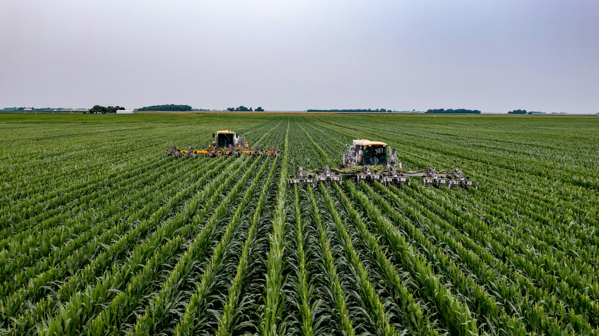

La Tunisie dispose de ressources naturelles qui n’attendent qu’à être exploité. Climat favorable à l’agriculture, grandes étendues de terres arables, vastes zones boisées, grands gisements de ressources minérales, biodiversité incomparable, main-d’œuvre abondante…tout y est. La Tunisie verte jouit en plus de ressources en eau renouvelables. Il y en a donc assez pour satisfaire les besoins relatifs au développement du potentiel d’irrigation.
Vers une agriculture et une alimentation de qualité et de proximité. Communes, intercommunalités, syndicats intercommunaux, conseils départementaux, acteurs économiques, établissements d'enseignement agricole... : vous souhaitez développer l’agriculture biologique sur votre territoire ? Vous ne savez pas par où commencer ? … ou vous souhaitez simplement avoir une vision complète des leviers que vous pouvez activer ?
L’Agriculture Biologique est un objectif et un enjeu pour l'action publique territoriale : • Création d’emplois durables et de qualité • Aménagement équilibré • Dépenses curatives qui ne sont plus nécessaires • Développement de l’attractivité du territoire • Renforcement de la cohésion sociale Préservation de la santé publique • Préserver les ressources naturelles • etc.
L’objectif est de favoriser la transition agricole et alimentaire en mettant en synergie les « forces » du territoire. Elle commence avec la décision politique et aboutit à la conception du processus de dialogue. La mise en place d’un dialogue constructif est une condition essentielle à la mobilisation des parties prenantes et au développement d’une approche transversale, gages de la réussite du projet. Ces types de projets territoriaux ayant pour objectif de développer l'AB.
Le diagnostic territorial est un outil pratique. Son intérêt : constituer un état des lieux commun à toutes les parties prenantes, le problématiser et en dégager des enjeux partagés. Le temps du diagnostic est aussi une opportunité pour comprendre comment le territoire est vécu par les différents acteurs. Son but est d'identifier les freins et les leviers du projet. Il permet d’identifier les opportunités qui favoriseraient le développement de l’agriculture biologique.
Il s'agit de construire précisément le plan d’action et aider les élus à prendre en main le pilotage du projet. Le diagnostic partagé permet à l’ensemble des parties prenantes de pouvoir co-construire un plan d’actions adapté au territoire. Avec cette démarche participative et pluridisciplinaire, l’intervention d’acteurs extérieurs (experts, scientifiques, témoins…) contribue à enrichir les perspectives.
La concrétisation du plan d’actions et son suivi régulier matérialisent le projet et son avancement. L’évaluation continue permet de mesurer l’efficacité du projet et le réajuster si besoin, et de mobiliser les parties prenantes.
Durant la phase de construction, les parties prenantes peuvent se mettre d’accord sur les indicateurs de suivi des actions et du projet. Outre le fait que ces indicateurs sont nécessaires pour mesurer l’avancement du projet, ils servent aussi à analyser les difficultés que les partenaires rencontrent dans la mise en œuvre des actions, et facilitent ainsi la recherche de solutions pour dépasser ces difficultés.
